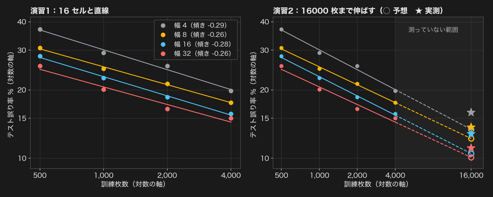

左：演習1 の 16 セル（点）と直線。右：直線を 16000 枚まで伸ばした予想（○）と実測（★）。★ はどの幅でも ○ より上にある。
| 幅 | 枚数 2 倍で何倍 | 16000 枚の予想 | 実測の平均 | 標準偏差 | 実測 − 予想 | 判定 |
|---|
| 4 | 0.82 | 13.5% | 15.9% | 0.7 | +2.4 | 外れた |
| 8 | 0.83 | 12.2% | 13.7% | 0.5 | +1.4 | 外れた |
| 16 | 0.82 | 10.5% | 12.8% | 0.1 | +2.3 | 外れた |
| 32 | 0.84 | 10.1% | 11.1% | 0.5 | +1.0 | どちらとも言えない |
どの幅でも実測は予想より 1〜2.4 ポイント悪い（直線は楽観的）。16 セルの中でも、幅 32 は 2000 → 4000 枚で 16.5% → 15.0% とあまり下がっていなかった。